————————————————————————
A continuación:
- Diversidad alfa. Hay otro html en donde se encuentra esta información.
————————————————————————
Resumen
El presente reporte corresponde a los últimos ajustes requeridos para someter el manuscrito a la revista indicada. Ajustes realizados:
- Generales: Con las cuatro semanas definitivas y relacionadas a las cuatro fases lunares del ejercicio, se realizará todo el procedimiento de diversidad alfa, modelos mixtos y técnicas de ordenación multivariada.
- Exploratorios gráficos: Figuras de relaciones (elipses, cajas y burbujas).
- Diversidad alfa: Curvas RAD, Diversidad en 4 pasos.
- Modelos mixtos: Figuras GAM y de áreas con columnas, para abundancias y biomasas.
Cargar bases de datos
Se cargan las librerías requeridas para el procesamiento de los datos.
Datos biológicos
Se carga la base de datos con las especies de peces.
| Especies | Abreviaturas |
|---|---|
| Achirus lineatus | Achl |
| Anchovia clupeoides | Ancc |
| Ariopsis sp | Aris |
| Bardiela ronchus | Barr |
| Caranx crysos | Carc |
| Cathorops mapale | Catm |
| Centropomus ensiferus | Cene |
| Centropomus pectinatus | Cenp |
| Centropomus undecimalis | Cenu |
| Cetengraulis edentulus | Cete |
| Chaetodipterus fabel | Chaf |
| Citharichthys spilopterus | Cits |
| Dasyatis guttata | Dasg |
| Diapterus rhombeus | Diar |
| Eugerres plumieri | Eugp |
| Gerres cinereus | Gerc |
| Gobiomorus dormitor | Gobd |
| Lutjanus analis | Luta |
| Lutjanus jocu | Lutj |
| Lycengraulis grossidens | Lycg |
| Menticirrhus americanus | Mena |
| Mugil incilis | Mugi |
| Oligoplites saliens | Olig |
| Oligoplites saurus | Olig.1 |
| Selene vomer | Selv |
| Sphoeroides testudineum | Spht |
| Stellifer sp | Stes |
| Strongylura timuco | Strt |
| Trichiurus lepturus | Tril |
Elipses
Algunas especies presentan relaciones positivas o directas en sus abundancias, las relaciones inversas son muy bajas.

Datos ambientales
Se carga la base de datos ambientales.
Elipses
Relaciones entre las variables ambientales tienen a ser positivas o directas.

Relación ambientales y taxones
Se observan algunas relaciones negativas entre las variables ambientales y la abundancia de las especies.

Figuras de Cajas
Se analizan los patrones de abundancias de peces (eje y), con diferentes factores (eje x), como las fases lunares (Moon), horarios (Time), y zonas (Zones).
Nota: Con esta base de datos de solo 4 semanas, No hay suficientes replicas para generar las cajas, sugiero incluir en la base biológica a la información de Zonas que servía como replicas.
Burbujas
Se relaciona a las especies de peces (eje y), variables ambientales (eje x), colores de las burbujas (fases lunares) y tamaños de las burbujas (abundancias).
Nota: Solo se hará con fases lunares, pero se puede hacer con el resto de factores (horarios y zonas).
Por niveles de pH
Se observa la mayor concentración de taxones abundantes y la mayor riqueza en pH entre 7.5 y 8 unidades.
Por niveles de O2
Se observa la mayor concentración de taxones abundantes y la mayor riqueza en OD entre 3.5 y 4.7 mg/L.

Por niveles de UPS
Se observa la mayor concentración de taxones abundantes y la mayor riqueza en UPS entre 19 y 25 unidades.

Por niveles de Temperatura
Se observa la mayor concentración de taxones abundantes y la mayor riqueza en temperaturas entre 28 y 30 grados centigrados.

Curvas RAD (Fases lunares, Horarios día-noche)
RAD por fases lunares (Moon)
Patrón de distribución de abundancias para las 15 especies más abundantes (para no saturar las figuras). Wan.cres y Wan.gibb, muestran la mayor presencia de especies abundantes o dominantes.

Las curvas RAD por cada fase lunar muestran los siguientes patrones:
- Wax.cres (Waxing crescent) üåí. La curva es más pendiente que el resto, lo cual muestra un patr√≥n con pocas especies que son las dominantes (ver taxones de la parte superios como aris, Cete y Ancc). En el siguiente análisis de ajuste de estas curvas, se demostrará que el modelo relacionado es el Zipf.
- Wax.gib (Waxing gobbous) üåî. Que no hay un patr√≥n definido en la estructura de las abundancias (de dominancia o de equidad en las abundancias de las especies), por lo cual en el siguiente análisis, el ajuste será más asociado a un modelo nulo.
- Wan.gib (Waning gibbous) üåñ. Hay una dominancia jerárquica con una estructura fractal. En el siguiente análisis el el ajuste de esta curva es a un modelo Mandelbrot.
- Wax.gibb (Waxing gibbous) üåò. Hay un patr√≥n uniforme en la distribuci√≥n de las abundancias para los diferentes taxones (curva menos pendiente), con lo cual se espera una mayor diversidad de peces y uniformidad para esta fase lunar. En el siguiente análisis el ajuste de esta curva es a un modelo lognormal.
RAD por horarios del día (Time)
Patrón de distribución de abundancias para las 15 especies más abundantes (para no saturar las figuras). En la noche se presenta el mayor número de especies abundantes o dominantes.
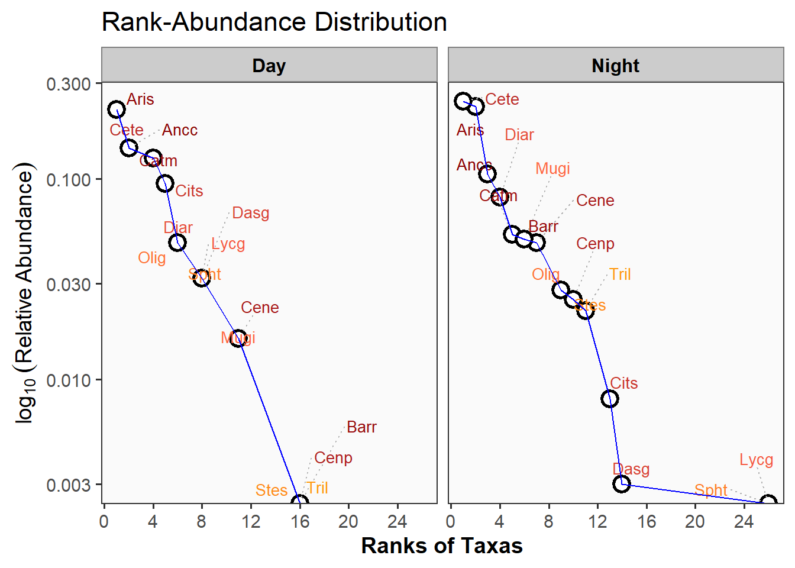
Patrón de distribución de abundancias para las 15 especies más abundantes (para no saturar las figuras). En la zona 3 se presenta el mayor número de especies abundantes o dominantes, seguida de las zonas 2 y 1 respectivamente.
Ajuste de las curvas RAD (Fases lunares, Horarios día-noche)
Los modelos de distribución de rango-abundancia (RAD, Rank-Abundance Distribution) siguen una distribución Poisson como base estadística, por ser datos discretos representados por valores de abundancia de las especies censadas. En este sentido los cinco modelos que se describen a continuación corresponde a esta familia de modelos generalizados (Null, Preemption, log-normal, Zipf y Mandelbrot).
La familia Poisson es parte de los Modelos Lineales Generalizados (GLMs), como una opción flexible para modelar datos que no necesariamente siguen una distribución normal. Esta familia es adecuada para modelar datos de conteo como las abundancias de especies. Sin embargo, su aplicabilidad depende de que los datos cumplan con supuestos de independencia y de homogeneidad de varianzas de las medias. Si lo anterior no se cumple, podría ser necesario considerar alternativas más flexibles como la Binomial Negativa.
El comando radfit de R (ajuste de Modelos - RAD), compara los cinco modelos mencionados: Null, Preemption, log-normal, Zipf y Mandelbrot, utilizando los criterios de información de Akaike (AIC) y los Bayesianos o de Schwartz (BIC). Los modelos RAD que se ajustan mejor a los datos, son los que presenten menor AIC y BIC.
En este sentido, los modelos evaluados (Preemption, Lognormal, Zipf, Mandelbrot) asumen la misma familia estadística (Poisson) para garantizar consistencia en los cálculos y comparaciones con trabajos realizados en muestras o ensamblajes similares. La elección de la familia estadística afecta la forma en que se calculan los criterios AIC y el BIC, permitiendo una evaluación equilibrada entre los modelos.
Ajuste del RAD por fases lunares (Moon)
A continuación se tabulan los resultados con los cinco modelos para cada fase lunar, lo importante es seleccionar para cada caso, el modelo que presente el menor AIC y BIC.
RAD models, family poisson
No. of species 19, total abundance 131
par1 par2 par3 Deviance AIC BIC
Null 27.0425 86.6416 86.6416
Preemption 0.23306 15.9065 77.5056 78.4501
Lognormal 1.1235 1.3601 3.2077 66.8068 68.6957
Zipf 0.36741 -1.2388 2.3196 65.9187 67.8076
Mandelbrot 0.85803 -1.5755 0.78668 1.4546 67.0537 69.8870
RAD models, family poisson
No. of species 17, total abundance 98
par1 par2 par3 Deviance AIC BIC
Null 15.0768 66.7623 66.7623
Preemption 0.21281 7.3766 61.0620 61.8952
Lognormal 1.2746 1.0364 17.2061 72.8916 74.5580
Zipf 0.2776 -0.96105 25.7718 81.4573 83.1237
Mandelbrot Inf -2.3946e+05 1.0025e+06 7.3473 65.0328 67.5324
RAD models, family poisson
No. of species 18, total abundance 130
par1 par2 par3 Deviance AIC BIC
Null 21.8534 78.6273 78.6273
Preemption 0.2405 7.0860 65.8599 66.7502
Lognormal 1.2572 1.2832 8.3899 69.1637 70.9445
Zipf 0.3472 -1.1732 13.3770 74.1509 75.9316
Mandelbrot 499.09 -3.5693 7.1177 3.5257 66.2996 68.9707
RAD models, family poisson
No. of species 13, total abundance 72
par1 par2 par3 Deviance AIC BIC
Null 6.0994 47.5182 47.5182
Preemption 0.23331 7.8975 51.3162 51.8812
Lognormal 1.258 1.0249 2.8758 48.2945 49.4244
Zipf 0.33416 -1.0596 2.8938 48.3125 49.4424
Mandelbrot 0.33417 -1.0596 8.6624e-06 2.8938 50.3125 52.0073Modelo 1: Wan.cres. Distribución predominante: Lognormal (AIC = 102.9). El patrón lognormal sugiere que el ensablaje de peces está estructurado de forma relativamente equilibrada, donde hay unas pocas especies muy abundantes y muchas especies con abundancias intermedias o bajas. Esto puede reflejar un entorno donde los recursos están repartidos en varios nichos trógicos.
Modelo 2: Wan.gibb. Distribución predominante: Zipf (AIC = 48.29). Los modelos Lognormal (48.29) y Zipf (48.31) tienen valores de AIC muy similares. Los modelos ZIP se asocian a ensamblajes en los que las especies dominantes ejercen el contro sobre los recursos. Esto se asocia a un patrón jerárquico, donde una o pocas especies dominan en abundancia. Esto puede reflejar mecanismos de competencia en los nichos tróficos.
Modelo 3: Wax.gibb. Distribución predominante: Zipf (AIC = 53.94). Aquí, el modelo Zipf es claramente el de mejor ajuste.
Modelo 4: Wax.cres. Distribución predominante: Lognormal (AIC = 102.86). El modelo Lognormal (102.86) es el mejor ajustado, muy cercano al modelo Mandelbrot (106.400).
Finalmente se puede presentar mayor competencia durante las fases lunares Wan.gibb y Wax.gib, en el resto de fases la competencia disminuye y el ensamblaje es más equilibrado en cuanto al uso del recurso, quiza por su mayor disponibilidad. De acuerdo a Ibañez et al. (2006), las distribuciones lognormales, aplican a ensamblajes estables (sin perturbaciones) y/o a oportunistas.
Figuras de los modelos RAD

La línea de mayor grosor es la que representa al modelo de mayor ajuste para cada fase lunar. A continuación se grafican los diagramas de mayor ajuste.

Ajuste del RAD por horarios día-noche (Time)
A continuación se tabulan los resultados con los cinco modelos para cada jornada, lo importante es seleccionar para cada caso, el modelo que presente el menor AIC y BIC.
RAD models, family poisson
No. of species 16, total abundance 69
par1 par2 par3 Deviance AIC BIC
Null 3.2808 50.9546 50.9546
Preemption 0.18428 1.6953 51.3691 52.1417
Lognormal 1.1075 0.89027 3.3919 55.0657 56.6109
Zipf 0.25252 -0.86799 6.8366 58.5104 60.0556
Mandelbrot 1.0383e+22 -12.878 57.167 1.5400 55.2138 57.5316
RAD models, family poisson
No. of species 26, total abundance 362
par1 par2 par3 Deviance AIC BIC
Null 119.758 208.451 208.451
Preemption 0.21643 27.407 118.100 119.358
Lognormal 1.6567 1.4837 36.193 128.886 131.402
Zipf 0.34086 -1.2183 64.280 156.973 159.489
Mandelbrot 23526 -4.5519 11.336 18.381 113.074 116.848Modelo 1: Day. Distribución predominante: Lognormal (AIC = 72.2), seguido muy de cerca por Zipf (AIC = 72.53). La distribución Lognormal sugiere que, en el horario diurno, las especies tienen una estructura de abundancia equilibrada con predominancia de unas pocas especies más abundantes y muchas de abundancias similares. Esto puede estar asociado con una mayor diversificación de nichos y de recursos tróficos. La similitud en el ajuste con el modelo Zipf podría indicar que hay una ligera jerarquización en la comunidad, pero no tan marcada.
Modelo 2: Night. Distribución predominante: Mandelbrot (AIC = 140.47), seguido por Preemption (AIC = 147.06). El modelo Mandelbrot indica que este ensamblaje en la noche, prsenta una estructura compleja, caracterizada por una jerarquía de en la dominancia de las especies de peces, pero más flexible que el modelo Zipf. Esto puede reflejar dinámicas de abundancia influenciadas por interacciones ecológicas nocturnas, como cambios en la obtención de recursos, el efecto de la depredación, o comportamiento de las especies. El modelo Preemption también que puede haber una fuerte repartición de los recursos, donde unas pocas especies dominan significativamente.
De acuerdo a Alanís-Rodríguez et al. (2020), el ajuste Premption, se denomina de nicho preferencial o de serie geométrica y se asocia a ensamblajes con algunos taxones que dominan por sus mayores densidades de indiviuos, especialmente en etapas iniciales de las sucesiones. Según Alanís-Rodríguez et al. (2020) y (Magurran, 2004), en el ajuste Mandelbrot se asocia a ensamblajes con pocas especies dominantes y en etapas sucesionales iniciales, considerado como uno de los mejores modelos para describir la distribución de la abundancia de especies.
Figuras de los modelos RAD

La línea de mayor grosor es la que representa al modelo de mayor ajuste para cada horario evaluado. A continuación se grafican los diagramas de mayor ajuste.
Diversidad alfa - propuesta de Chao et al. (2020)
Por fases lunares (Moon)
Patrón general de diversidad por cada fase lunar. Wan.cres y Wang.gibb presentan la mayoa abundancia y riqueza de especies, así como la mayor cantidad de singletons o especies con un individuo (f1) y de doubletons o especies con dos individuos (f2), esta cantidad de singletons afectará considerablemente a su perfil de completitud y el perfil asintótico que se muestran a continuación.
| Moon | N | Richness | f1 | f2 |
|---|---|---|---|---|
| Wan.cres | 131 | 19 | 6 | 2 |
| Wan.gibb | 98 | 17 | 7 | 2 |
| Wax.cres | 130 | 18 | 6 | 3 |
| Wax.gibb | 72 | 13 | 3 | 1 |
Paso 1. Perfil de completitud
El perfil de completitud, para los casos que sea <0.9 indica que la muestra no es completa. Se observa que para la riqueza de especies (q=0) todas las fases lunares son incompleta (<0.9), lo cual indica que puede requerirse un mayor esfuerzo de muestreo o que se pueden encontrar más taxones. Los taxones abundantes (q=1) y muy abundantes (q=2) fueron registrados en su totalidad (>0.9).
| Moon | q = 0 | q = 1 | q = 2 |
|---|---|---|---|
| Wan.cres | 0.68 | 0.95 | 1 |
| Wan.gibb | 0.58 | 0.93 | 1 |
| Wax.cres | 0.75 | 0.95 | 1 |
| Wax.gibb | 0.75 | 0.96 | 1 |
Paso 2. Perfil asintótico
El perfil asintótico muestra que en las fases lunares Wan.cres y Wan.gibb, se presenta el mayor número de especies sin detectar (8 especies), seguidas de Wax.cres con 6 especies no detectadas. Este patrón puede afectar para que no se encuentre la asintota de diversidad, en la figura que se presenta a continuación.
| Moon | Estimator | Ob.D | Est.D | Undet. |
|---|---|---|---|---|
| Wan.cres | q = 0 | 19 | 28 | 9 |
| Wan.cres | q = 1 | 9 | 10 | 1 |
| Wan.cres | q = 2 | 6 | 6 | 0 |
| Wan.gibb | q = 0 | 17 | 29 | 12 |
| Wan.gibb | q = 1 | 10 | 12 | 2 |
| Wan.gibb | q = 2 | 8 | 9 | 1 |
| Wax.cres | q = 0 | 18 | 24 | 6 |
| Wax.cres | q = 1 | 9 | 10 | 1 |
| Wax.cres | q = 2 | 6 | 7 | 0 |
| Wax.gibb | q = 0 | 13 | 17 | 4 |
| Wax.gibb | q = 1 | 8 | 10 | 1 |
| Wax.gibb | q = 2 | 6 | 6 | 0 |
La siguiente figura complementa el patrón asintótico de la tabla anterior, en el que se observa que ninguna de las fases lunares se estabiliza en q = 0 (total de especies), ni siquiera interpolando al doble de la abundancia registrada (líneas punteadas, no se estabilizan o no se vuelven asintóticas para la diversidad esperada). Esto se debe al lto número de especies con un solo individuo encontradas (f1).
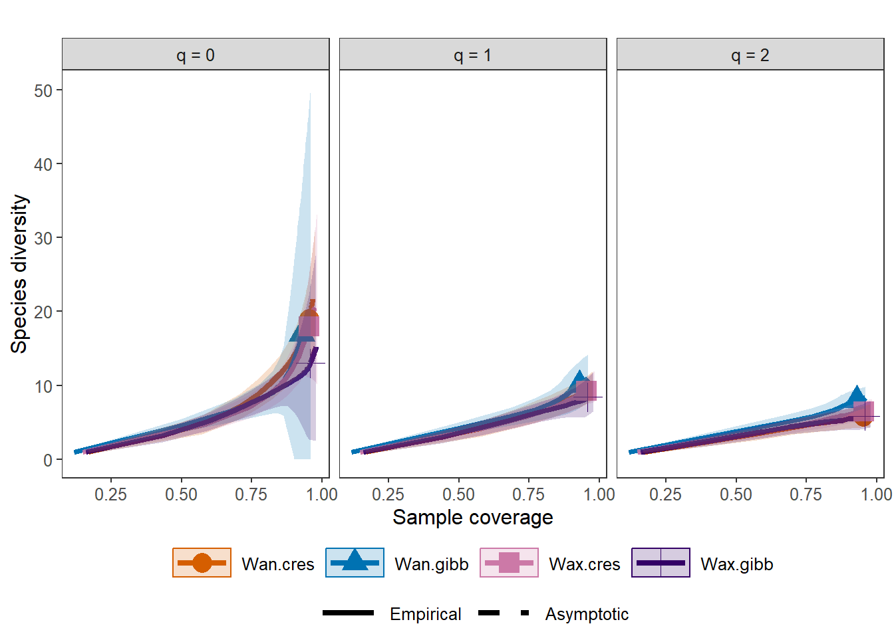
Paso 3. Perfil no asintótico
La siguiente tabla muestra el patrón no asintótico, en el que se extrae una submuestra de cada fase lunar y para este caso la cobertura calculada es del 97%, para lo cual se espera encontrar mayor número de taxones en Wan.cres, seguida de Wan.gibb, Wax.cres y Wax.gibb respectivamente. Este patrón presenta validez, debido a la falta de asintota en el paso anterior.
| Cmax = 0.96 | q = 0 | q = 1 | q = 2 |
|---|---|---|---|
| Wan.cres | 20.10 | 9.46 | 5.79 |
| Wan.gibb | 22.31 | 10.92 | 8.32 |
| Wax.cres | 18.76 | 9.36 | 6.53 |
| Wax.gibb | 13.14 | 8.48 | 5.87 |
El siguiente perfil complementa a la tabla anterior, para lo cual, todas las curvas presentan una cobertura > 0.9 o cercana a uno en el eje x, para que sus patrones de diversidad sean comparables.
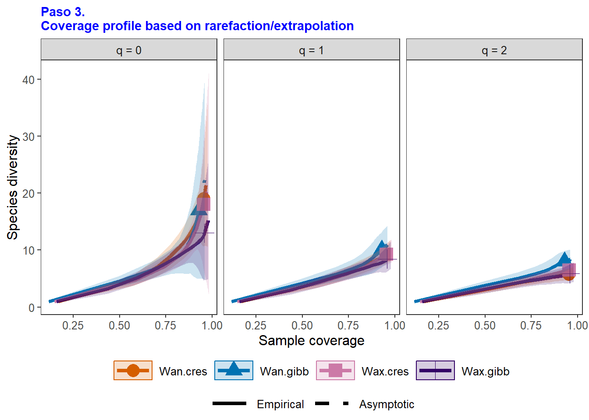
Paso 4. Patrón de uniformidad
Para este caso se observa que la mayor uniformidad de Pielou (J) se presenta en Wax.gibb que representa a la estación con menor número de tazones (q=0) y menos nùmero de singletons (f1).
| Cmax = 0.96 | Pielou J' | q = 1 | q = 2 |
|---|---|---|---|
| Wan.cres | 0.75 | 0.44 | 0.25 |
| Wan.gibb | 0.77 | 0.47 | 0.34 |
| Wax.cres | 0.76 | 0.47 | 0.31 |
| Wax.gibb | 0.83 | 0.62 | 0.40 |
Por Horarios (Times)
Patrón general de diversidad por horario del día. En la noche se presenta la mayor abundancia y riqueza de especies, así como la mayor cantidad de singletons o especies con un individuo (f1) y de doubletons o especies con dos individuos (f2), esta cantidad de singletons afectará considerablemente a su perfil de completitud y el perfil asintótico que se muestran a continuación.
| Solar_day | N | Richness | f1 | f2 |
|---|---|---|---|---|
| Day | 69 | 16 | 5 | 3 |
| Night | 362 | 26 | 12 | 0 |
Paso 1. Perfil de completitud
El perfil de completitud, para los casos que sea <0.9 indica que la muestra no es completa. Se observa que para la riqueza de especies (q=0) los horarios día y noche son inncompletos (<0.9), lo cual indica que puede requerirse un mayor esfuerzo de muestreo o que se pueden encontrar más taxones, especialmente en la noche. Los taxones abundantes (q=1) y muy abundantes (q=2) fueron registrados en su totalidad (>0.9).
| Solar_day | q = 0 | q = 1 | q = 2 |
|---|---|---|---|
| Day | 0.80 | 0.93 | 0.99 |
| Night | 0.28 | 0.97 | 1.00 |
Paso 2. Perfil asintótico
El perfil asintótico muestra que en la noche se presenta el mayor número de especies sin detectar (28 especies no detectadas), seguida del día con solo 4 especies no detectadas. Este patrón puede afectar para que no se encuentre la asintota de diversidad, en la figura que se presenta a continuación.
| Solar_day | Estimator | Ob.D | Est.D | Undet. |
|---|---|---|---|---|
| Day | q = 0 | 16 | 20 | 4 |
| Day | q = 1 | 11 | 13 | 2 |
| Day | q = 2 | 9 | 10 | 1 |
| Night | q = 0 | 26 | 92 | 66 |
| Night | q = 1 | 11 | 12 | 1 |
| Night | q = 2 | 7 | 7 | 0 |
La siguiente figura complementa el patrón asintótico de la tabla anterior, en el que se observa que ninguno de los horarios día-noche se estabilizan en q = 0 (total de especies), ni siquiera interpolando al doble de la abundancia registrada (líneas punteadas, no se estabilizan o no se vuelven asintóticas para la diversidad esperada). Esto se debe al lto número de especies con un solo individuo encontradas (f1).
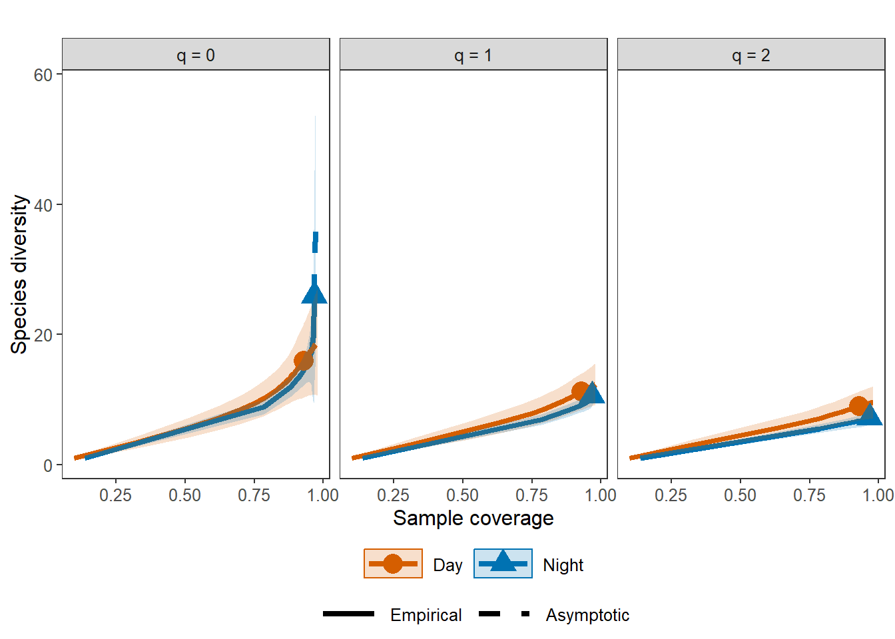
Paso 3. Perfil no asintótico
La siguiente tabla muestra el patrón no asintótico, en el que se extrae una submuestra de cada horario día-noche y para este caso la cobertura calculada es del 98%, para lo cual se espera encontrar mayor número de taxones en la noche (42 especies), seguida de la mañana (22 especies). Este patrón presenta validez, debido a la falta de asintota en el paso anterior.
| Cmax = 0.972 | q = 0 | q = 1 | q = 2 |
|---|---|---|---|
| Day | 18.51 | 12.18 | 9.49 |
| Night | 36.97 | 11.04 | 7.26 |
El siguiente perfil complementa a la tabla anterior, para lo cual, todas las curvas presentan una cobertura > 0.9 o cercana a uno en el eje x, para que sus patrones de diversidad sean comparables.
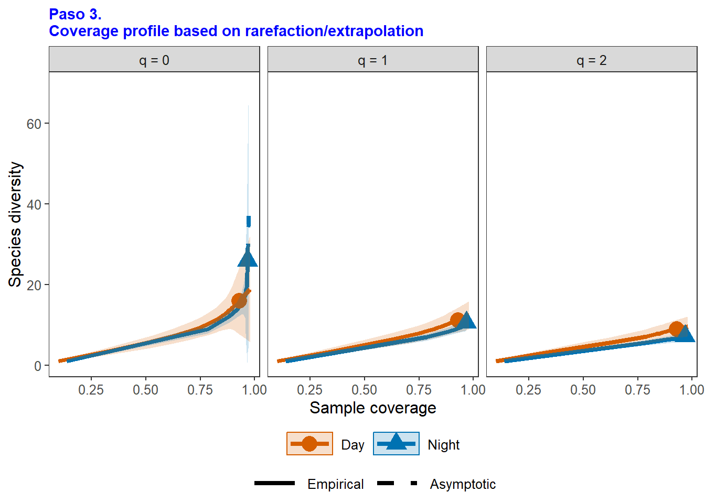
Paso 4. Patrón de uniformidad
Para este caso se observa que la mayor uniformidad de Pielou (J) se presenta en la mañana que representa a la estación con menor número de tazones (q=0) y de especies con un solo individuo (f1).
| Cmax = 0.972 | Pielou J' | q = 1 | q = 2 |
|---|---|---|---|
| Day | 0.86 | 0.64 | 0.48 |
| Night | 0.67 | 0.28 | 0.17 |
————————————————————————
A continuación:
- Modelos lineales Mixtos. Hay otro html en donde se encuentra esta información.
————————————————————————
1. Modelo lineal mixto “lm” sin Zone
Nota. No se incluye semanas “week” porue coincide con las cuatro semanas seleccionadas y sería redundante con “Moon”.
Nota. No se puede incluir la variable aleatoria “Zone”, porque presenta un problema de singulariadad, debido a que su intercepto en el modelo es cero (0) o que no contribuye a explicar la variabilidad de la abundancia. Se diagnosticará el modelo que mejor se ajusta a los datos, y de las tres variables predictoras (Moon, Week y Time), se escoge solo a los horarios día-noche (time), pues son los que muestran una explicación significativa. A continuaciòn se realiza el modelo general, con todos los predictores.
Modelos con diferentes combinaciones de predictores. Se usarán los criterios AIC() y BIC() para evaluar los modelos.
m1 m2 m3
219.1 202.2 212.4 m1 m2 m3
234.0 212.1 229.7 De acuerdo a estos diagnósticos, el mejor modelo es el No. 2. porque es el que presenta menos AIC y BIC.
\(log_{10}(Abundancia)\) = \(β_0\) + \(β_1\) × \(Time\) + \(γ\) + \(ε\)
Dónde:
$β_0$:Intercepto general.$β_1$:Coeficientes de los efectos fijos para Horarios día-noche (time).$γ$ :Efecto aleatorio del gremio trófico.$ε$:Error residual.
| Time | Moon | Trophic.guild | Ab |
|---|---|---|---|
| Day | Wan.cres | Omnivores | 17 |
| Day | Wan.cres | Phytobenthivores | 1 |
| Day | Wan.cres | Planktivores | 9 |
| Day | Wan.cres | Zoobenthivores | 7 |
| Day | Wan.gibb | Omnivores | 1 |
| Day | Wan.gibb | Planktivores | 3 |
Linear mixed model fit by REML ['lmerMod']
Formula: log(Ab + 1) ~ Time + (1 | `Trophic guild`)
Data: data
REML criterion at convergence: 194.2
Scaled residuals:
Min 1Q Median 3Q Max
-1.7728 -0.7632 -0.1322 0.6961 2.7430
Random effects:
Groups Name Variance Std.Dev.
Trophic guild (Intercept) 0.1231 0.3508
Residual 0.4802 0.6930
Number of obs: 88, groups: Trophic guild, 5
Fixed effects:
Estimate Std. Error t value
(Intercept) 1.0680 0.2129 5.017
TimeNight 0.5460 0.1600 3.413
Correlation of Fixed Effects:
(Intr)
TimeNight -0.507A. Elementos del modelo “lm”
Modelo lineal generalizado mixto. lmer permite modelar relaciones lineales entre una variable dependiente (
Abundance) y múltiples predictores, considerando efectos fijos y aleatorios.Variables del modelo.
Abundance ~ Week + Moon + Time: Incluye las variables dependiente y a las predictoras.Efectos aleatorios.
(1 | Trophic guild): Efectos aleatorios para capturar la variabilidad específica de los gremios tróficos. También se podría incorporar a las *zonas como(1 | Zone).
B. Insumos del modelo.
Linear mixed model fit by REML ['lmerMod']
Formula: log(Ab + 1) ~ Time + (1 | `Trophic guild`)
Data: data
REML criterion at convergence: 194.2
Scaled residuals:
Min 1Q Median 3Q Max
-1.7728 -0.7632 -0.1322 0.6961 2.7430
Random effects:
Groups Name Variance Std.Dev.
Trophic guild (Intercept) 0.1231 0.3508
Residual 0.4802 0.6930
Number of obs: 88, groups: Trophic guild, 5
Fixed effects:
Estimate Std. Error t value
(Intercept) 1.0680 0.2129 5.017
TimeNight 0.5460 0.1600 3.413
Correlation of Fixed Effects:
(Intr)
TimeNight -0.5071. Evaluación General.
- Criterio de convergencia REML: 194,2. Indica un buen ajuste del modelo realizado (a menor valor se ajustará mejor el modelo). Número de observaciones: 136. Grupos de efectos aleatorios: “Trophic.guild” tiene 6 niveles (gremios tróficos).
2. Residuales escalados.
- Los residuos reflejan cuán lejos están las observaciones individuales del ajuste del modelo: Mínimo: -1.77. Máximo: 2.74. La mayoría de los residuos están cerca de cero, en un rango moderado, lo que indica un buen ajuste del modelo.
3. Efectos aleatorios.
Varianza del intercepto para “Trophic.guild”: 0.12 (desviación estándar: 0.35). Esto indica una variabilidad moderada entre los gremios tróficos en las abundancias promedio. Esto sugiere que aunque hay diferencias entre gremios tróficos, estas no explican toda la variabilidad en las abundancias de peces.
Varianza residual: 0.48 (desviación estándar: 0.69). La mayor variabilidad en la abundancia se da a nivel residual, lo que sugiere que otros factores no incluidos en el modelo podrían estar influyendo. *Podría considerarse a la variabilidad que explican las tres zonas que no se tabularon.
4. Efectos fijos
Los coeficientes de los efectos fijos muestran cómo cada variable afecta la abundancia promedio de peces.
Intercepto: 1.06 Representa la abundancia promedio esperada cuando todas las variables predictoras están en sus niveles de referencia. En el intercepto (e^{1.06} ≈ 0.6), la abundancia promedio es aproximadamente 1 individuo.
oon (fases lunares): Aunque las fases lunares muestran tendencias negativas, ninguna es estadísticamente significativa (estimado > estadístico t), sugiriendo que no tienen un impacto claro sobre la abundancia de peces.
Waning Crescent: -0.43169, no significativa (t= -10101)
Waning Gibbous: −0.15896, no significativa (t=−0.489).
Waxing Crescent: −0.34028, no significativa (t=−0.988).
Waxing Gibbous: −0.08306, no significativa (t=−0.259).
Time (jornada día-noche): Durante la noche, la abundancia promedio es aproximadamente 59.4% mayor que durante el día (e^{0.46622} ≈ 1.594, entonces 1.594 - 1= 0.594 ≈ 59.4%).
- Night: 0.4622, significativa (t=2.648).
Nota: El resto de detalles están en el html con las 6 semanas.
E. Diagnósticos gráficos del modelo lineal mixto - lm

1. Gráfico de residuales vs. índice de observaciones
Este gráfico ayuda a verificar si las relaciones lineales y los supuestos de homocedasticidad se cumplen. Si se observan patrones sistemáticos, podría ser necesario ajustar el modelo, como incluir términos no lineales o transformar variables.
El Eje x representa al índice de las observaciones, es decir, el orden en que se encuentran en los datos del modelo. El Eje y relaciona a los residuales del modelo (ei=yi−y^ie_i = y_i - _iei​=yi​−y^​i​), que representan las diferencias entre los valores observados y los predichos.
Como los residuales están distribuidos de manera aleatoria alrededor de 0, sugiere que el modelo ajusta bien los datos. En caso que se presenten patrones como una curva o una tendencia ascendente/descendente, podría indicar que el modelo no captura completamente la estructura de los datos (tendencias sistemáticas). Si los residuales muestran una variabilidad creciente o decreciente (como un cono), sugiere que la varianza no es constante (heterocedasticidad).
2. Gráfico Q-Q (cuantil-cuantil) de los residuales
Este gráfico evalúa si los residuales siguen una distribución normal, como generalmente se asume en los modelos lineales mixtos. Un gráfico Q-Q apropiado respalda la validez de los intervalos de confianza y pruebas de hipótesis en el modelo. Si los residuales no son normales, se podrían considerar transformaciones de los datos o métodos robustos.
El Eje x relaciona a los cuantiles teóricos de una distribución normal estándar. El Eje y muestra a lo cuantiles observados de los residuales. La Línea de referencia (qqline): Representa la distribución normal esperada. Los puntos deberían alinearse aproximadamente con esta línea. Puntos cercanos a la línea indican que los residuales se ajustan bien a una distribución normal. Si los puntos se desvían significativamente de la línea en los extremos, podría sugerir colas largas (distribución leptocúrtica) o cortas (distribución platicúrtica). Una curvatura en forma de S podría indicar que los residuales no son normales, posiblemente debido a la presencia de outliers o a una transformación incorrecta de los datos.
Figuras para gremios tróficos
1. Figura de regresiones GAM
Nota: Este modelo requiere que Moon se trabaje como variable numérica ordinal, por ello se reemplazan las fases lunares como: Wax.cres = 1, Wax.gibb = 2, Wan.gibb = 3, Wan.cres = 4. Corre nuevamente ese modelo con esa variable ordinal.
La Figure 1 los omnivoros y los planctivoros, presentaron tendencias negativas a los largo de las seis semanas del estudio, mientras que los piscivoros mostraron un incremento leve en el aumento de su abundancia. Estos cambios se asocian a un patrón d disminución marcado de la abundancia total hacia la semana 4 y un cambio en el ensamblaje trófico dominado inicialmente por omnívoros al compuesto principalmente por planctivoros (Figure 2).
2. Figura de áreas para gremios tróficos
2.1 Abundancias de gremios por fases lunares - Opción con barras discretas.
Esta opción (Figure 2) es más cercana a la realidad de los datos, que la siguiente figura con área continua por interpolación. Se observa que en Wax.gibb, el aumento de los omnivoros, coincide con la disminución en la abundancia total de los peces.
*Nota: Esta figura no coincide con la de abundancias absolutas siguiente (Figure 3).
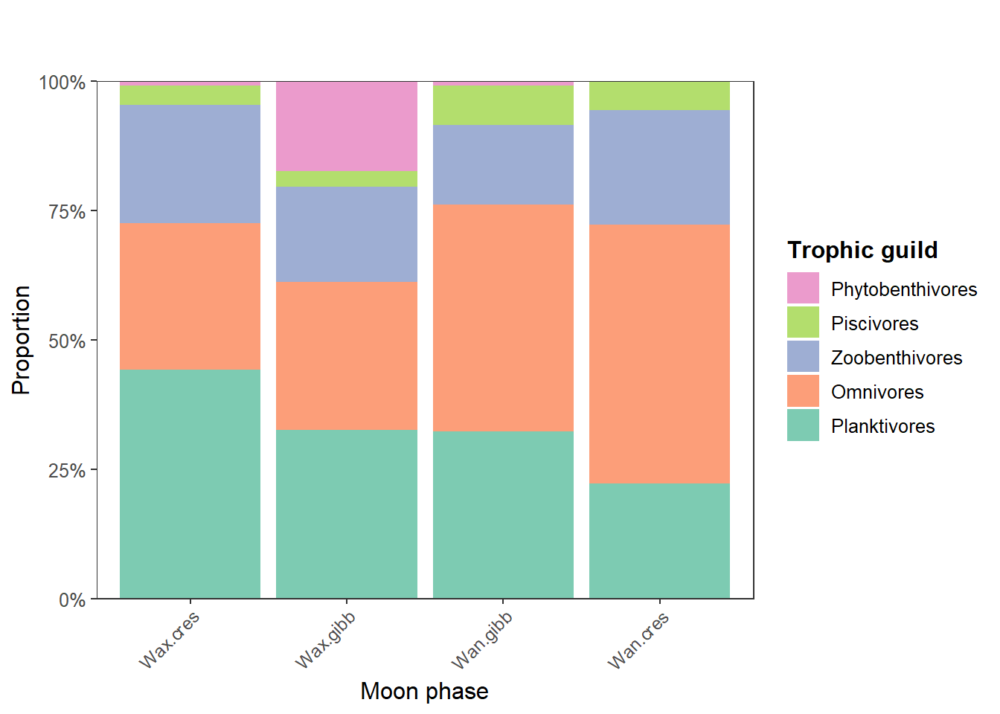
Esta figura (Figure 3) se diferencia de la anterior porque se realiza con abundancias absolutas de la base de abundancias por gremios funcionales “functional” del archivo “datos25.xlsx”.

Esta ?@fig-fig7 a diferencia de la siguiente, se extrae de ta tabla general “data1” en el archivo datos25.xlsx de Excel, pero los resultados son iguales a Figure 5.

Esta ?@fig-fig8, a diferencia de la anterior se extrae de la hoja “functional2” en el archivo de Excel, pero los resultados son iguales a los de ?@fig-fig7..

##————————————————————————
A continuación:
- Técnicas de ordenación. (NMDS, RDA) y de clasificación (CLA).
##————————————————————————
1. NMDS con abundancias de taxones
Escalamiento Multidimensional no Métrico 1 (NMDS)
Se aplicará esta técnica para explorar los gradientes en la ordenación de los sitios o Moon, su relación con los trece Species taxonómicos y las variables ambientales. Se utilizará la distancia Bray Curtis, para la asociación de los datos.
Paso 1. Cargar Librerías
Se ejecutan las librerías necesarias para este análisis.
Paso 2. NMDS
| ID | Moon | Time | Achl | Ancc | Aris | Barr | Carc | Catm | Cene | Cenp | Cenu | Cete | Chaf | Cits | Dasg | Diar | Eugp | Gerc | Gobd | Luta | Lutj | Lycg | Mena | Mugi | Olig | Olig.1 | Selv | Spht | Stes | Strt | Tril |
|---|---|---|---|---|---|---|---|---|---|---|---|---|---|---|---|---|---|---|---|---|---|---|---|---|---|---|---|---|---|---|---|
| Wax.cN | Wax.cres | Night | 2 | 12 | 29 | 3 | 0 | 9 | 1 | 5 | 0 | 28 | 0 | 2 | 0 | 10 | 0 | 1 | 0 | 0 | 0 | 0 | 1 | 1 | 9 | 0 | 0 | 0 | 1 | 0 | 1 |
| Wax.cD | Wax.cres | Day | 0 | 1 | 6 | 0 | 0 | 0 | 1 | 0 | 0 | 1 | 0 | 1 | 0 | 2 | 0 | 1 | 1 | 0 | 0 | 0 | 0 | 0 | 0 | 0 | 0 | 1 | 0 | 0 | 0 |
| Wax.gN | Wax.gibb | Night | 2 | 5 | 25 | 4 | 0 | 5 | 4 | 1 | 0 | 4 | 0 | 1 | 0 | 6 | 0 | 0 | 0 | 1 | 0 | 0 | 0 | 0 | 0 | 0 | 0 | 0 | 0 | 1 | 0 |
| Wax.gD | Wax.gibb | Day | 2 | 5 | 0 | 0 | 0 | 0 | 0 | 0 | 0 | 2 | 0 | 1 | 0 | 0 | 0 | 0 | 0 | 0 | 0 | 0 | 0 | 0 | 3 | 0 | 0 | 0 | 0 | 0 | 0 |
| Wan.gN | Wan.gibb | Night | 0 | 16 | 14 | 7 | 1 | 1 | 2 | 2 | 0 | 12 | 0 | 0 | 1 | 11 | 1 | 0 | 0 | 0 | 1 | 0 | 0 | 17 | 0 | 0 | 1 | 0 | 1 | 0 | 3 |
| Wan.gD | Wan.gibb | Day | 0 | 0 | 1 | 0 | 0 | 0 | 0 | 0 | 0 | 3 | 0 | 1 | 2 | 0 | 0 | 0 | 0 | 0 | 0 | 0 | 0 | 0 | 0 | 0 | 0 | 0 | 0 | 0 | 0 |
Se utiliza la distancia Bray Curtis y el estrés generado es de 0.17 (17%), denotando una buena configuración para este análisis.
| sitio | NMDS1 | NMDS2 | Moon | Time |
|---|---|---|---|---|
| Wax.cres | -0.1125378 | -0.0149870 | Wax.cres | Night |
| Wax.cres | -0.0469532 | -0.4664983 | Wax.cres | Day |
| Wax.gibb | -0.2315104 | -0.1858518 | Wax.gibb | Night |
| Wax.gibb | 0.8354679 | -0.1387079 | Wax.gibb | Day |
| Wan.gibb | -0.5939929 | 0.0359554 | Wan.gibb | Night |
| Wan.gibb | 0.2752838 | 0.6681970 | Wan.gibb | Day |
A continuación se extraen las coordenadas de las Moon, Times, Zones, Species taxonómicos y variables ambientales, para ser ordenadas con la librería ggplo2.
L Figure 8, muestra la ordenación del NMDS para las referencias de las Moon, con los Species taxonómicos y las variables ambientales. No se logra apreciar un gradiente claro, aunque las Moon 9, 13 y 15 son las que agrupan mayor cantidad de taxones, asociadas a mayor Temperature y Salinity.
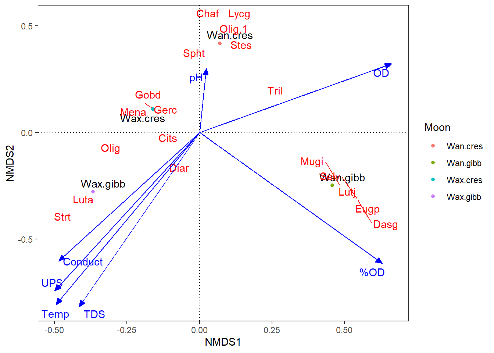
La Figure 9 muestra la diferenciación por Moon, se logra observar un gradiente horizontal, en donde algunas Moon muestran diferencias por sus Species taxonómicos.
La Figure 10 complementa a la Figure 9, al incorporar las variables ambientales en la caracterización de las Moon y de los Species taxonómicos.
La Figure 11 que la composición taxonómica con 250 micras, se encuentra anidada en 500 micras.
##————————————————————————
2. NMDS con abundancias de gremios tróficos
Escalamiento Multidimensional no Métrico 2 (NMDS)
Se aplicará esta técnica para explorar los gradientes en la ordenación de los sitios o Moon, su relación con los cinco gremios tròficos y las variables ambientales. Se utilizará la distancia Bray Curtis, para la asociación de los datos.
Paso 1. Cargar Librerías
Se ejecutan las librerías necesarias para este análisis.
Paso 2. NMDS
| ID | Moon | Time | Omni | Phyt | Pisc | Plan | Zoob |
|---|---|---|---|---|---|---|---|
| Wax.cN | Wax.cres | Night | 48 | 1 | 10 | 40 | 16 |
| Wax.cD | Wax.cres | Day | 9 | 0 | 0 | 2 | 4 |
| Wax.gN | Wax.gibb | Night | 36 | 0 | 1 | 9 | 13 |
| Wax.gD | Wax.gibb | Day | 0 | 0 | 3 | 7 | 3 |
| Wan.gN | Wan.gibb | Night | 1 | 0 | 0 | 3 | 3 |
| Wan.gD | Wan.gibb | Day | 27 | 17 | 3 | 29 | 15 |
Se utiliza la distancia Bray Curtis y el estrés generado es de 0.17 (17%), denotando una buena configuración para este análisis.
| sitio | NMDS1 | NMDS2 | Moon | Time |
|---|---|---|---|---|
| Wax.cres | -0.2234660 | 0.0730490 | Wax.cres | Night |
| Wax.cres | 0.4843053 | -0.0715582 | Wax.cres | Day |
| Wax.gibb | 0.4196199 | 0.0710209 | Wax.gibb | Night |
| Wax.gibb | -0.7621302 | -0.0713230 | Wax.gibb | Day |
| Wan.gibb | 0.0385210 | -0.4726698 | Wan.gibb | Night |
| Wan.gibb | -0.1068426 | 0.5174074 | Wan.gibb | Day |
A continuación se extraen las coordenadas de las Moon, Times, Zones, Species taxonómicos y variables ambientales, para ser ordenadas con la librería ggplo2.
L Figure 12, muestra la ordenación del NMDS para las referencias de las Moon, con los Species taxonómicos y las variables ambientales. No se logra apreciar un gradiente claro, aunque las Moon 9, 13 y 15 son las que agrupan mayor cantidad de taxones, asociadas a mayor Temperature y Salinity.
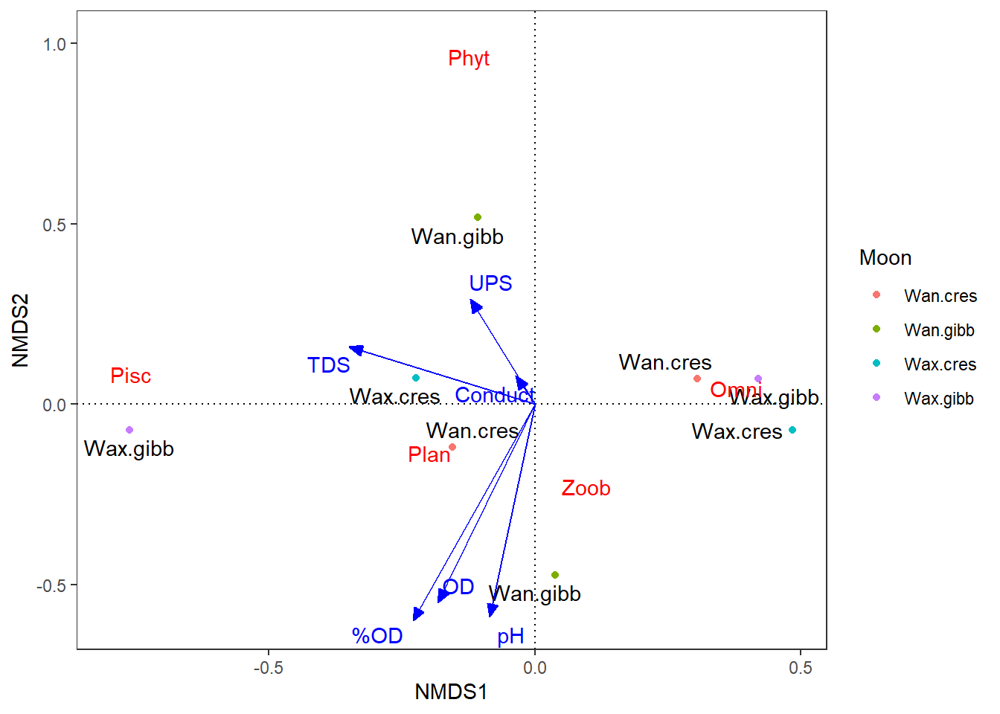
La Figure 13 muestra la diferenciación por Moon, se logra observar un gradiente horizontal, en donde algunas Moon muestran diferencias por sus Species taxonómicos.
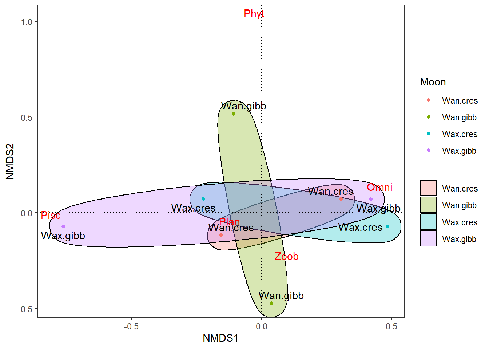
La Figure 14 que la composición taxonómica con 250 micras, se encuentra anidada en 500 micras.
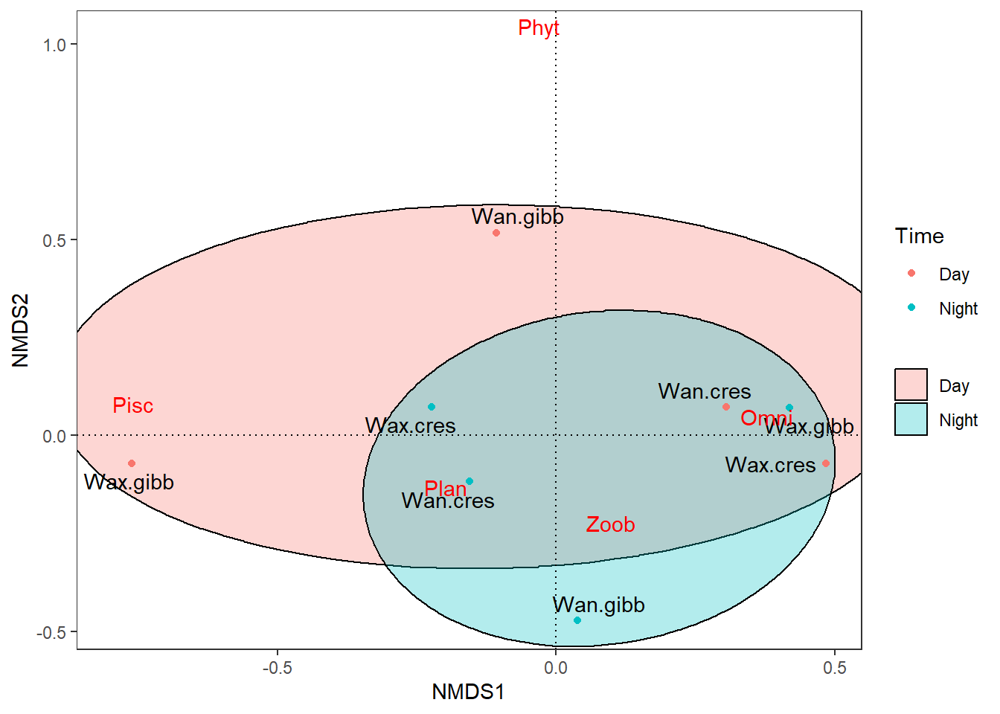
##————————————————————————
3. NMDS con biomasas de gremios tróficos
Escalamiento Multidimensional no Métrico 3 (NMDS)
Se aplicará esta técnica para explorar los gradientes en la ordenación de los sitios o Moon, su relación con los cinco gremios tròficos y las variables ambientales. Se utilizará la distancia Bray Curtis, para la asociación de los datos.
Paso 2. NMDS
| ID | Moon | Time | Omni | Phyt | Pisc | Plan | Zoob |
|---|---|---|---|---|---|---|---|
| Wax.cN | Wax.cres | Night | 9546.000 | 94 | 390 | 1008 | 1130 |
| Wax.cD | Wax.cres | Day | 3349.753 | 0 | 0 | 28 | 534 |
| Wax.gN | Wax.gibb | Night | 9439.000 | 0 | 123 | 394 | 1284 |
| Wax.gD | Wax.gibb | Day | 0.000 | 0 | 576 | 201 | 98 |
| Wan.gN | Wan.gibb | Night | 4521.600 | 2238 | 720 | 733 | 8861 |
| Wan.gD | Wan.gibb | Day | 505.000 | 0 | 0 | 48 | 11016 |
Se utiliza la distancia Bray Curtis y el estrés generado es de 0.17 (17%), denotando una buena configuración para este análisis.
| sitio | NMDS1 | NMDS2 | Moon | Time |
|---|---|---|---|---|
| Wax.cres | -0.2386728 | -0.1153456 | Wax.cres | Night |
| Wax.cres | 0.4200181 | -0.1723931 | Wax.cres | Day |
| Wax.gibb | -0.1067338 | -0.1463216 | Wax.gibb | Night |
| Wax.gibb | -0.6896296 | 0.3575221 | Wax.gibb | Day |
| Wan.gibb | 0.0620192 | 0.2511501 | Wan.gibb | Night |
| Wan.gibb | 0.8315369 | 0.3233224 | Wan.gibb | Day |
A continuación se extraen las coordenadas de las Moon, Times, Zones, Species taxonómicos y variables ambientales, para ser ordenadas con la librería ggplo2.
L Figure 15, muestra la ordenación del NMDS para las referencias de las Moon, con los Species taxonómicos y las variables ambientales. No se logra apreciar un gradiente claro, aunque las Moon 9, 13 y 15 son las que agrupan mayor cantidad de taxones, asociadas a mayor Temperature y Salinity.
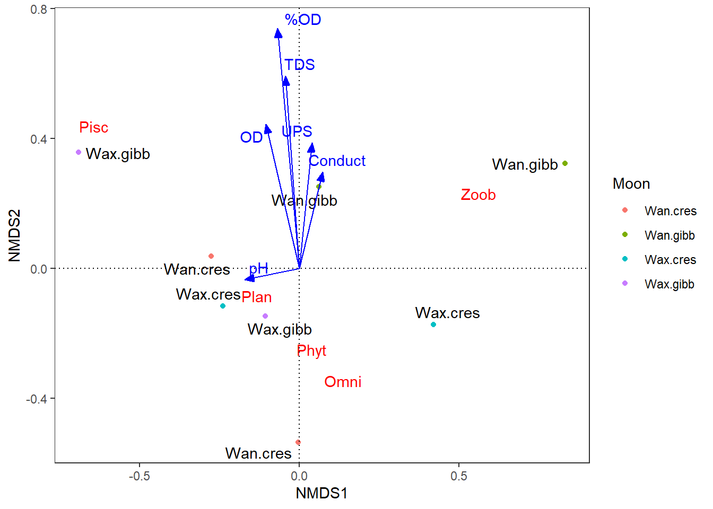
La Figure 16 muestra la diferenciación por Moon, se logra observar un gradiente horizontal, en donde algunas Moon muestran diferencias por sus Species taxonómicos.
La Figure 17 que la composición taxonómica con 250 micras, se encuentra anidada en 500 micras.
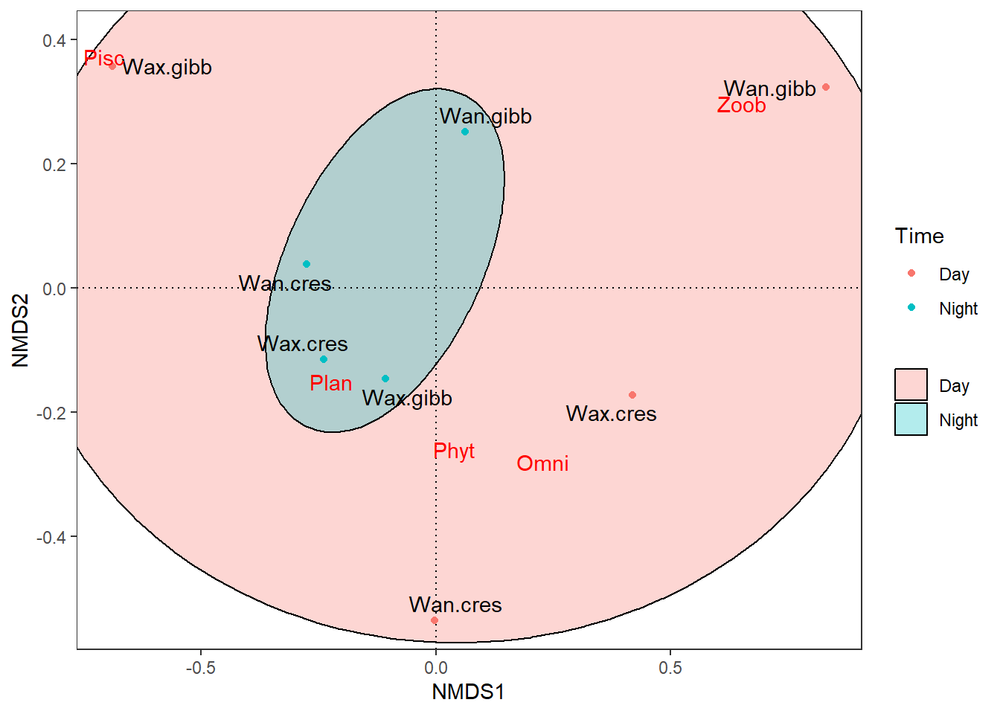
##————————————————————————
A continuación:
- Técnicas de ordenación. (RDA)
##————————————————————————
1. RDA con abundancias de taxones
Intenté correrlo pero el ajuste con la inercia no dirigida y con el R2 ajustado (Ezequiel 1930), dan demasiado bajos, por tener muy pocos datos por cada fase lunar. Sugiero considerar alguno de los NMDS anteriores, que pueden tener un mejor desempeño con ese tipo de datos, aunque no son tan robustos como el RDA, pero podrían funcionar para este caso.
Pendiente: Ajustar consecutivos de las figuras, enviar html a Lenin.